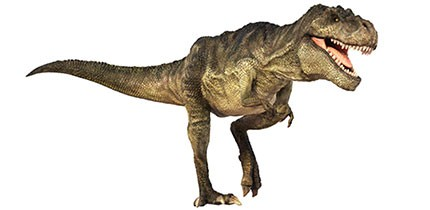

|  |
|
Tyrannosaurus lives up to its reputation as one of the most fearsome animals of all time. Its powerful jaws had 60 teeth, each one up to 20cm (8 inches) long and its bite was around 3 times as powerful than that of a lion. Bite marks found on Triceratops and Edmontosaurus fossil bones show that Tyrannosaurus could crunch through bone. Analysis of fossilised Tyrannosaurus dung show that it contained the bones of its prey.
The Tyrannosaurus skull was over 1.5m (5 feet) long and the cavity that housed the part of the brain responsible for smell was relatively large. Tyrannosaurus would have used its good sense of smell to hunt live prey and locate dead bodies to scavenge. It would have been able to scare off any other scavengers, so it didn't have to share.
Some Tyrannosaurus fossils show bite marks from other tyrannosaurs, so it's clear that they fought each other, whether over food or mates. We know that close relatives of Tyrannosaurus sometimes lived together because there are fossils of groups who were buried together, but we don't know for sure if they hunted alone, or in packs like lions and wolves do today. So far, no groups of Tyrannosaurus skeletons have been found.